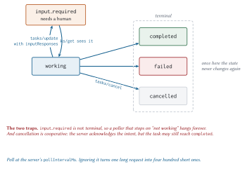

Extensions and Tasks
The whole appeal of that line is the confidence of the deferral. Not “wait here”. Not “I will hold this door open indefinitely”. Just: this is going to take a while, and I will return.
That is the Tasks extension in one sentence. And Tasks arriving as an extension is the other half of this chapter, because the extensions framework is how MCP now grows without breaking.
The extensions framework
The problem every successful protocol hits: a feature that half the ecosystem needs and the other half never will. Put it in core and you burden everyone. Put it nowhere and it gets reinvented five incompatible ways.
MCP’s answer is negotiated extensions, and the mechanism is deliberately small. Both sides advertise support in a map keyed by identifier:
{
"capabilities": {
"tools": {},
"extensions": {
"io.modelcontextprotocol/tasks": {},
"io.modelcontextprotocol/ui": {
"mimeTypes": ["text/html;profile=mcp-app"]
}
}
}
}Clients declare theirs per request, inside io.modelcontextprotocol/clientCapabilities. Servers declare theirs in server/discover. Identifiers follow the _meta key rules, so they carry a mandatory reverse-DNS prefix, and the io.modelcontextprotocol/ prefix is reserved for official ones.
The settings object is the extension’s own business. Empty means “supported, nothing to configure”.
The fallback rule
One line, and it is the important one:
Meridian’s risk server does exactly this. It supports Tasks. It checks whether the caller does, per request, and takes the synchronous path when they do not:
def underwrite_loan(ctx: RequestContext):
account_id = ctx.arguments["accountId"]
account = ACCOUNTS.get(account_id)
if account is None:
return tool_error(f"No account {account_id}.")
# Only return a task to a client that asked for the extension. To one
# that did not, the fast path is the only correct answer.
if not ctx.capabilities.supports_extension(tasks_ext.EXTENSION_ID):
return _underwrite_now(account, ctx.arguments)
task = server.tasks.create(status=tasks_ext.WORKING,
status_message="queued", poll_interval_ms=200)
...Both paths are tested, because “we fall back gracefully” is a claim that rots:
def test_client_without_the_extension_gets_the_synchronous_answer(self):
server = risk.build_server()
tasks_ext.install(server)
client = Client(InProcessTransport(server),
capabilities=ClientCapabilities())
result = client.call_tool("underwrite_loan",
{"accountId": "ACC-1000", "amountUsd": 250_000})
self.assertEqual(result["resultType"], "complete")
self.assertIn("decision", result["structuredContent"])Why this design is good
Three reasons, and the third is the one that will matter in 2028.
The core stays small. Tasks moved out of core in this revision. That is a protocol getting smaller, which almost never happens, and it happened because the extensions framework gave it somewhere to go.
Extensions version independently. MCP Apps was finalised 2026-01-26 while core was on a different cycle. Neither had to wait.
Vendors get a legitimate path. Your company can ship com.acme/audit without forking the protocol or squatting on a reserved prefix. If it turns out to be generally useful, the road to standardisation runs through a public specification proposal.
Why not just block?
Now Tasks proper. And the fair question first: why not hold the connection open?
Sometimes you should. If the work takes 200 milliseconds, blocking is simpler and cheaper and you should do that. Tasks solve four problems that blocking cannot, and if none of them apply to you, do not use Tasks.
- Timeouts you do not control
-
Every intermediary between you and the client has an opinion about how long a request may take. Load balancers, proxies, CDNs, and mobile radios all reap idle connections, typically somewhere between 30 and 120 seconds.
- Crash resilience
-
A task id is durable. Client restarts, laptop lid closes, network changes from wi-fi to cellular, and the same id still resolves. A blocked request survives none of that, and Chapter 3 removed stream resumability, so a broken stream loses the whole request.
- Progress visibility
-
A blocked request is opaque. A task has a status, a message, and a progress fraction.
- Mid-flight input
-
The killer feature. A task can move to
input_required, surface a question, and wait, without anyone holding a connection open or inventing a second channel.
The lifecycle

| Status | Terminal | Meaning |
working |
no | In progress |
input_required |
no | Needs client input. See inputRequests |
completed |
yes | result holds what the call would have returned |
failed |
yes | error holds a JSON-RPC error |
cancelled |
yes | Cancelled, and cancellation is cooperative |
Creation
The server decides, per request, whether to return a task. There is no per-tool flag and no per-request opt-in beyond the client’s capability declaration. That was a deliberate simplification in the redesign: the server knows how long the work will take, and the client should not have to guess.
{
"jsonrpc": "2.0",
"id": 1,
"result": {
"resultType": "task",
"task": {
"taskId": "tsk_a1b2c3d4e5f6",
"status": "working",
"statusMessage": "queued",
"ttlMs": 3600000,
"pollIntervalMs": 200
}
}
}One requirement that sounds like an implementation detail and is not: the task must be durably created before the response is sent. If the server crashes between sending the id and persisting the task, the client holds a handle to nothing, and it will poll that handle politely until its timeout.
Polling
{ "jsonrpc": "2.0", "id": 2, "method": "tasks/get",
"params": { "taskId": "tsk_a1b2c3d4e5f6" } }Two things clients get wrong here, and Meridian’s loop guards both:
def poll_until_done(client, task_id, *, timeout=30.0,
on_status=None, input_provider=None):
"""Client-side polling loop, honouring the server's suggested cadence.
Two things people get wrong here. First, ignoring `pollIntervalMs` and
hammering every 50 ms, which turns one long request into four hundred short
ones. Second, forgetting that `input_required` is not terminal: a task that
stops to ask a question sits there until somebody answers it.
"""
deadline = time.time() + timeout
while time.time() < deadline:
task = client.call("tasks/get", {"taskId": task_id}, use_cache=False)
state = task.get("task", task)
status = state.get("status")
if status in TERMINAL:
if status == FAILED:
err = state.get("error") or {}
raise errors.McpError(err.get("code", errors.INTERNAL_ERROR),
err.get("message", "task failed"))
return state.get("result") or {}
if status == INPUT_REQUIRED and input_provider is not None:
answers = {}
for key, req in (state.get("inputRequests") or {}).items():
if req.get("method") == "elicitation/create":
answers[key] = input_provider.elicit(key,
req.get("params") or {})
client.call("tasks/update",
{"taskId": task_id, "inputResponses": answers},
use_cache=False)
interval = max(0.05, state.get("pollIntervalMs", 500) / 1000.0)
time.sleep(interval)For long jobs, back off. Poll fast for the first few seconds in case the work was quicker than expected, then widen. And add jitter, or a thousand clients that started together will keep polling together forever.
Mid-flight input
This is where Tasks and MRTR compose, and it is genuinely elegant.
A task hits a point needing human judgement. It moves to input_required and surfaces the same inputRequests map from Chapter 8. The client answers with tasks/update rather than by retrying the original call, because the original call is long since finished.
{
"jsonrpc": "2.0",
"id": 5,
"method": "tasks/update",
"params": {
"taskId": "tsk_a1b2c3d4e5f6",
"inputResponses": {
"approval": { "action": "accept",
"content": { "approver": "j.okonjo" } }
}
}
}The server acknowledges with an empty result, and one detail is worth copying:
@server.method("tasks/update")
def _update(ctx: RequestContext) -> dict:
"""Deliver answers to a task waiting on input.
Unknown or already-satisfied keys are ignored rather than rejected. A
client that retried a `tasks/update` after a timeout should not get an
error for being careful.
"""Idempotent updates. A client whose tasks/update timed out will retry, and punishing it for that turns a transient network problem into a failed task.
Cancellation is a request, not a command
{ "jsonrpc": "2.0", "id": 6, "method": "tasks/cancel",
"params": { "taskId": "tsk_a1b2c3d4e5f6" } }The server acknowledges the intent. It is not obliged to stop, and the task may still reach completed. That is not sloppiness: a task that has already charged a card cannot be un-charged by a cancel arriving 200 milliseconds later, and pretending otherwise would be worse.
Meridian’s test asserts the honest condition:
def test_cancel_is_acknowledged(self):
...
client.call("tasks/cancel", {"taskId": task_id}, use_cache=False)
self.assertIn(store.get(task_id).status,
(tasks_ext.CANCELLED, tasks_ext.COMPLETED))Either outcome is correct. A test that demanded CANCELLED would be asserting something the protocol does not promise.
Where tasks live, and why it matters
Here is the part that turns a nice feature into an operational hazard.
Meridian is honest about being a book:
class TaskStore:
"""Where tasks live between polls.
In-memory here, which is a lie a book is allowed to tell once. Any real
deployment needs this in something durable and shared, because the whole
point is that the next poll may land on a different replica. The moment you
put tasks in a process-local dict behind a load balancer, you have
reinvented sticky sessions, which is the thing this revision deleted.
"""Requirements for a real one:
Shared across replicas. Redis, Postgres, DynamoDB, anything.
Durable enough to survive a deploy. Task ids outlive processes, which is the feature.
Expiring.
ttlMsis a promise about how long the id resolves. Sweep afterwards or the store grows forever.Authorized on every access. A task id is a name, not a capability. Check the caller on
tasks/getas well as on creation, or anyone who can guess an id can read somebody’s underwriting decision.
When not to use Tasks
The chapter’s most useful section, because the failure mode here is enthusiasm.
Tasks add a polling loop, a durable store, an expiry policy, and a second code path in every client. That is real complexity, and for short work it buys nothing.
| Duration | Use | Because |
| Under 1 s | Synchronous | Polling costs more than the work |
| 1 to 10 s | Synchronous, with progress notifications | The stream is still healthy; the user sees movement |
| 10 to 60 s | Judgement call | Depends on your intermediaries’ patience |
| Over 60 s | Tasks | Something in the path will reap the connection |
| Needs a human | Tasks | Humans take minutes, and connections do not |
| Wraps a job API | Tasks | You already have a job id; map it |
For the middle band, use progress notifications instead. They keep the user informed without any of the machinery:
scored, unknown = [], []
total = len(ids)
for i, account_id in enumerate(ids):
...
if total > 20 and i % 10 == 0:
ctx.progress(i, total, f"scored {i} of {total}")Note the guard. Progress on a three-item loop is noise, and each notification is a frame on the wire that somebody has to read.
Meridian’s underwriting task
Four stages, progress reported at each:
task = server.tasks.create(status=tasks_ext.WORKING,
status_message="queued", poll_interval_ms=200)
def work(t):
stages = ["pulling filings", "scoring", "checking covenants", "pricing"]
for i, stage in enumerate(stages, start=1):
server.tasks.update(t.task_id, status_message=stage,
progress=i / len(stages))
time.sleep(0.05)
return _underwrite_now(account, ctx.arguments)
tasks_ext.run_in_background(server.tasks, task, work)
return tasks_ext.create_task_result(task)And the background runner, whose only real job is making sure the task always reaches a terminal state:
def runner() -> None:
try:
result = work(task)
if task.status not in TERMINAL:
store.update(task.task_id, status=COMPLETED,
result=result if isinstance(result, dict) else {},
status_message="done")
except errors.McpError as exc:
store.update(task.task_id, status=FAILED, error=exc.to_json())
except Exception as exc:
store.update(task.task_id, status=FAILED,
error=errors.InternalError(str(exc)).to_json())The bare except is deliberate. A task that crashes without reaching a terminal state is a client polling forever, and forever is a long time. failed with an explanation is always better than working with a lie.
Note also the if task.status not in TERMINAL guard. If the work completed after a cancellation was recorded, the cancellation stands. Terminal means terminal.
Vendor extensions
You can define your own. Two rules and one piece of advice.
Prefix it properly. Reverse DNS, and the second label must not be modelcontextprotocol or mcp. com.acme/audit is fine. com.mcp.acme/audit is reserved and using it is squatting.
Document the fallback. What should a peer that does not support it do? Answer that in your specification, not in a support ticket.
And the advice: before you write one, check whether a tool would do. An extension changes the protocol for everyone who implements it. A tool is a tool. The bar for a new extension should be that the capability genuinely cannot be expressed as a tool, resource, or prompt, which is a higher bar than it first appears.
What to remember
Extensions are negotiated through capabilities, with mandatory reverse-DNS identifiers.
The fallback rule: revert to core behaviour or reject clearly. Never send a shape the peer cannot parse, and test both paths.
Tasks moved out of core into
io.modelcontextprotocol/tasks. A protocol got smaller.The server decides per request whether to return a task; the client opts in once via capabilities.
Create the task durably before answering.
input_requiredis not terminal. Poll at the server’spollIntervalMs, back off, and add jitter.tasks/updatemust be idempotent. Cancellation is cooperative.An in-memory task store behind a load balancer has reinvented sticky sessions. Use a shared, durable, expiring store, and authorize every access.
Under a second, stay synchronous. One to ten seconds, stream progress. Over a minute, or human in the loop, use Tasks.
Next: MCP Apps, where a tool result stops being text and starts being an interface.